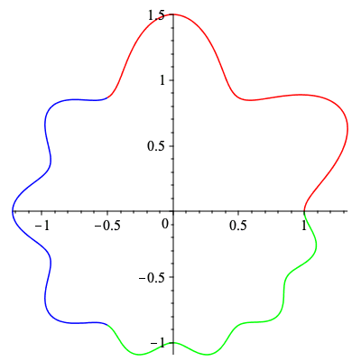
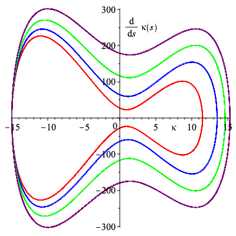

Non-degenerate cogwheels
Set up
A proceedure that takes a parameterization and returns the curvature and derivative with respect to arclength.
| > | curvature := proc(x,y,t)
description "input x and y parameterized by t to return curvature and derivative with respect to arclength parameterized by t"; local k, kp; k := (diff(x,t)*diff(y,t,t)-diff(y,t)*diff(x,t,t))/((diff(x,t)^2+diff(y,t)^2)^(3/2)); kp := diff(k,t)/((diff(x,t)^2+diff(y,t)^2)^(1/2)); return k, kp; end proc: |
A proceedure that takes n, the number of sections on the cogwheel, a, a list with n elements that tells how many teeth each section has, and r_0, the inner radius of the cogwheel. The output is the parameterization of such a cogwheel.
| > | cogwheel := proc(n,a,r_0)
description "input number of sections, n, number of teeth, a, and inner radius, r_0, output the parameterization of a non-degenerate cogwheel"; local r_j, j, rho_x, rho_y; r_j := 0; for j from 1 to n do r_j := r_j + piecewise(t < 2*(j-1)*Pi/n, 0, t <= 2*j*Pi/n, a[j]^(-2)*(1-cos(n*a[j]*t)), t <= 2*Pi, 0): end do; rho_x := (r_0 + r_j)*cos(t); rho_y := (r_0 + r_j)*sin(t); return rho_x, rho_y; end proc: |
Example of Non-Degenerate Cogwheel
A non-degenerate cogwheel with 3 sections having 2, 3, and 4 teeth on each section, with an inner radius of 1.
| > | cog_ex := cogwheel(3,[2,3,4],1):
plot([[cog_ex[1],cog_ex[2],t=0..2*Pi/3],[cog_ex[1],cog_ex[2],t=2*Pi/3..4*Pi/3],[cog_ex[1],cog_ex[2],t=4*Pi/3..2*Pi]],color=["red","blue","green"],scaling="constrained"); |
|  |
Non-Degenerate Cogwheels with identical Signature
Two non-degenerate cogwheels with identical siganture. Created by permuting sections of teeth.
| > | cog1 := cogwheel(4,[3,4,5,6],1):
cog2 := cogwheel(4,[3,5,4,6],1): |
| > | cog1_plot := plot([[cog1[1],cog1[2],t=0..Pi/2],[cog1[1],cog1[2],t=Pi/2..Pi],[cog1[1],cog1[2],t=Pi..3*Pi/2],[cog1[1],cog1[2],t=3*Pi/2..2*Pi]],color=["red","blue","green","purple"],labels=[x,y],scaling="constrained"):
cog2_plot := plot([[cog2[1],cog2[2],t=0..Pi/2],[cog2[1],cog2[2],t=Pi/2..Pi],[cog2[1],cog2[2],t=Pi..3*Pi/2],[cog2[1],cog2[2],t=3*Pi/2..2*Pi]],color=["red","green","blue","purple"],labels=[x,y],scaling="constrained"): |
| > | plots[display](Array([cog1_plot,cog2_plot])); |
|
The curvatures for the above two cogwheels.
| > | k1, kp1 := curvature(cog1[1],cog1[2],t):
k2, kp2 := curvature(cog2[1],cog2[2],t): |
| > | k1_plot := plot([[t,k1,t=0..Pi/2],[t,k1,t=Pi/2..Pi],
[t,k1,t=Pi..3*Pi/2],[t,k1,t=3*Pi/2..2*Pi]],color=["red","blue","green","purple"],numpoints=1000,labels=["t",kappa]): k2_plot := plot([[t,k2,t=0..Pi/2],[t,k2,t=Pi/2..Pi], [t,k2,t=Pi..3*Pi/2],[t,k2,t=3*Pi/2..2*Pi]],color=["red","green","blue","purple"],numpoints=1000,labels=["t",kappa]): |
| > | sig := plot([[k1,kp1,t=0..Pi/2],[k1,kp1,t=Pi/2..Pi],
[k1,kp1,t=Pi..3*Pi/2],[k1,kp1,t=3*Pi/2..2*Pi-.001]],color=["red","blue","green","purple"]): |
| > | plots[display](Array([k1_plot,k2_plot])); |
|
The signature for the above two cogwheels and the following cogwheels.
| > | sig_label := plots[textplot]({[7.5,-25,'typeset'(kappa)],[3,250,'typeset'(diff(kappa(s),s))]}):
plots[display]({sig,sig_label}); |
|  |
The below proceedures generate cogwheels that swap the ordering of teeth on the cogwheels above and plots them using the same color matching.
| > | cog_swap := proc(L,n)
description "give a list, and number of sections, and order cogs that way"; local theta, r_j, rho_x, rho_y, i; theta := 0; r_j := 0; for i from 1 to nops(L) do r_j := r_j + piecewise( t <= theta, 0, t <= theta + 2*Pi/(n*L[i]), L[i]^(-2)*(1-cos(4*L[i]*(t-theta))), t <= 2*Pi, 0); theta := theta + 2*Pi/(n*L[i]); end do; rho_x := (1 + r_j)*cos(t); rho_y := (1 + r_j)*sin(t); return rho_x, rho_y; end proc: |
| > | cog_swap_plot := proc(L,rho_x,rho_y,n)
description "give cog list and x-y coords along with number of sections and get color plot. Add more colors to cog_color if using more than 4 sections"; local cog_color, cog_plot, theta,i; cog_color := ["red","blue","green","purple"]; theta := 0; cog_plot := []; for i from 1 to nops(L) do cog_plot := [op(cog_plot),plot([rho_x,rho_y,t=theta..theta+2*Pi/(n*L[i])],labels=[x,y],color=cog_color[L[i]-2])]; theta := theta + 2*Pi/(n*L[i]); end do; return cog_plot; end proc: |
Here we generate two more non-degenerate cogwheels with the signature above, but with the teeth permuted rather than the whole sections.
| > | cog3_teeth := [3,4,4,4,4,3,5,5,5,5,5,3,6,6,6,6,6,6]:
cog4_teeth := [4,5,6,4,6,4,3,5,3,5,6,3,6,5,6,4,5,6]: |
| > | cog3 := cog_swap(cog3_teeth,4):
cog4 := cog_swap(cog4_teeth,4): |
| > | cog3_plot := cog_swap_plot(cog3_teeth,cog3[1],cog3[2],4):
cog4_plot := cog_swap_plot(cog4_teeth,cog4[1],cog4[2],4): |
| > | plots[display](Array([plots[display](cog3_plot,scaling="constrained"),plots[display](cog4_plot,scaling="constrained")])); |
|
|
Cogwheels generated from non-admissible words
Below are cogwheels generated from non-admissible words.
The left coghweel losses two teeth from its 6-section to gain one in its 3-section while the right cogwheel looses two teeth in its 4-section to gain three in its 6-section.
While they will have the same signature as above, the signature index will be different, though the right cogwheel has the same signature index as those above.
| > | cog5_teeth := [3,3,4,4,4,4,5,5,5,5,5,6,6,6,6,6,6,6,6]:
cog6_teeth := [3,3,3,4,4,4,4,4,4,5,5,5,5,5,6,6,6]: |
| > | cog5 := cog_swap(cog5_teeth,4):
cog6 := cog_swap(cog6_teeth,4): |
| > | cog5_plot := cog_swap_plot(cog5_teeth,cog5[1],cog5[2],4):
cog6_plot := cog_swap_plot(cog6_teeth,cog6[1],cog6[2],4): |
| > | plots[display](Array([plots[display](cog5_plot,scaling="constrained"),plots[display](cog6_plot,scaling="constrained")])); |
|